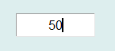

输入框控件是最常用的GUI控件之一，可用于输入文字或数字。输入框的图形显示效果如下：

在Python程序GUI界面中创建一个数字型输入框控件的命令为:
hl=dr.DREntryDX(win,x,y,w,h,bg,fg,digital,fontsize)
或文本型输入框控件
hl=dr.DREntryTX(win,x,y,w,h,bg,fg,txt,fontsize)
其中hl是创建时用户设定的变量名。输入框控件可以通过回调函数绑定的方式将用户的输入传递给绑定的回调函数，格式为：
hl.addCallBackSingle(setValueSingle)
或文本型的
hl.addCallBackString(setValueString)被绑定的回调函数是一个单数值函数，收到的是用户输入的数字量或文字信息：
def setValueSingle(v):
或
def setValueString(t):每个输入框控件有2个属性函数，可用于设定其所显示的文字或数字，也可以用于获取其所显示的文字或数字。对数字型输入框控件，其属性函数为：
hl.setValueSingle(v)
v=hl.getValueSingle()
对文本型输入框控件，其属性函数为：
hl.setValueString(txt)
txt=hl.getValueString()
输入框控件是从Tkinter的Entry控件继承而来，因此必要时还可以通过Tkinter_Entry控件的属性和方法来对其进行装饰。
更多有关Tkinter_Entry控件的详细用法请参阅Tkinter文献。
.